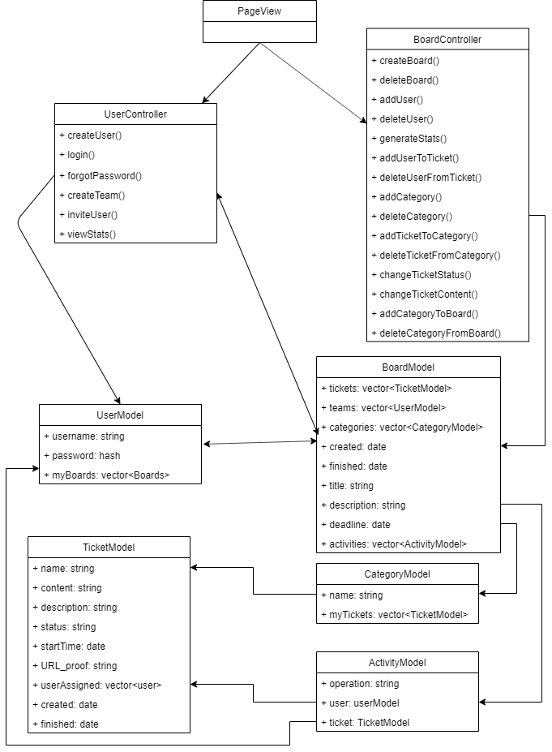
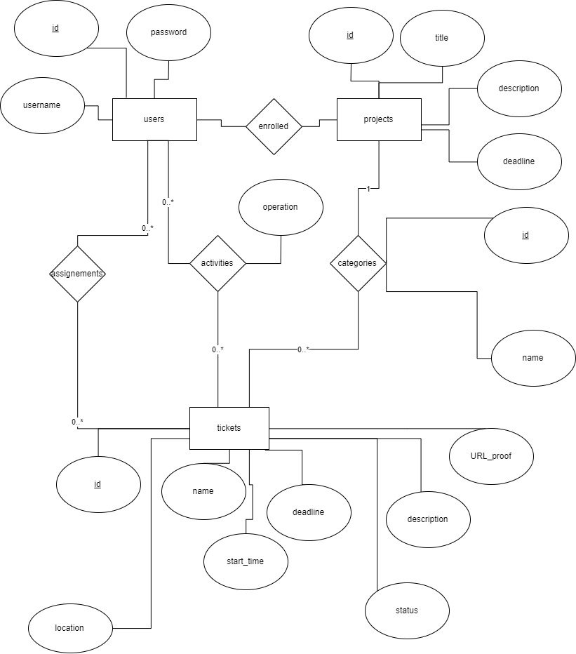

Info UAIC 2019
Aplicatia TaSOr (Task Smart Organizer) va avea ca scop creare unui organizator de proiecte , in care fiecare user va putea face parte dintr-o echipa. Fiecare user va putea fi capabil sa creeze tichete sa le asigneze un deadline, va putea modifica statusul tichetului ( Grooming , In Progress , Done ). Orice utilizator va putea modifica statusul oricarui tichet si schimba descrierea tichetului. Ca sursa de inspiratie vom folosi Trello.
Ca sistem de stocare si management a codului sursa vom folosi GitHub.
Aplicatia va folosi arhitectura Single Page Application.
Pagina aceasta este intermediul aplicatiei prin care se pot accesa toate functionalitatile acesteia. Continutul paginii va fi modificat in functie de parametrii preluati din url astfel, vom incerca sa mapam fiecare fisier cu continut JS si HTML pe un model Dictionary ( Key: 'url params' , value: 'html and js content') Vom folosi History API pentru simularea navigarii intre pagini.
Projects sunt componentele ce vor fi afisate pe prima pagina imediat dupa logare ce vor reprezenta poriectele din care face parte studentul care s-a conectat. In momentul in care utilizator va da click pe un proiect acesta va deschide un board.
Ticketele vor fi reprezentarile grafice a taskurilor pe care un user le are asignate in cadrul unui proiect(board). Ele vor fi afisate pe boardul propriu zis si vor contine date legate de: deadline-ul ticketului , user-ul care se ocupa de tichet descririea ticketului, statusul si categoria din care face parte ticketul ( backend, frontend , serverside etc..) in care se afla acesta.
Un grup de useri ce se vor ocupa de un anumit proiect se va numi Category ( useri vor avea acces la componenta echipei din care fac parte)
Ca prim pas utilizatorul va trebui sa isi creeze un account, dupa care cu credentialele alese se va loga in pagina principala a aplicatiei. Utilizatorul avand account-ul creat va putea primi cereri de intrare in proiecte. Pe pagina principala a aplicatiei acesta va avea acces la toate proiectele la care este inscris, va putea accesa statistici in legatura cu activitatea sa. In momentul in care un utilizator va accesa un proiect i se afisa board-ul proiectului in care va avea drepturi de a crea tickete , de a primi tickete create de alt user, de a schimba statusul ticketelor care i-au fost asignate , de a schimba cerintele tichetelor
Ca baza de date vom utiliza MongoDB(baza de date non-relationala) ce va fi structurata pe 7 tabele. Am ales MongoDB deoarece este foarte usor de gasit documentatie pentru acesta si este mai usor de folosit deoarece este o baza de date non-relationala, iar datele vin in format JSON fiind mult mai usor de citit si de prelucrat. Deoarece vom folosi express ca si framework este posibil sa folosim si mongoose(ORM) pentru prelucrarea datelor.

https://w3c.github.io/scholarly-html/
https://github.com/w3c/scholarly-html